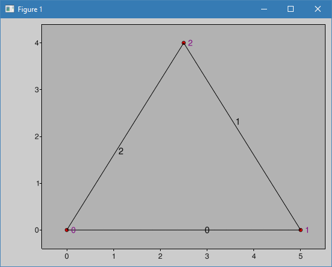
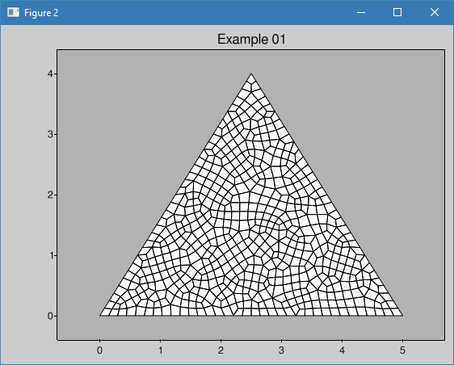
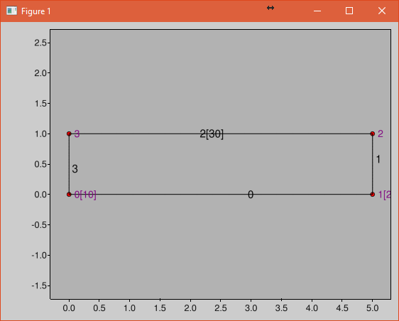

Mesh generation with CALFEM¶
Included in the Python version of CALFEM is a mesh generation library based on GMSH. The library encapsulates the usage of GMSH transparently for the user. It will also parse the output from GMSH and create the necessary data structures required by CALFEM for solving finite element problems.
Mesh generation in CALFEM is divided in three steps:
Defining the geometry of the model.
Creating a finite element mesh with the desired elements and properties
Extracting data structures that can be used by CALFEM.
The following sections describe these steps.
Required modules for geometry and mesh generation¶
To use the CALFEM geometry and mesh generation routines, we use the following import directives:
import calfem.geometry as cfg
import calfem.mesh as cfm
import calfem.vis as cfv
Defining geometry¶
Geometry in CALFEM is described using the Geometry class. A Geometry-object will hold all points, lines and surfaces describing the geometry. This object is also what is passed to the mesh generation routines in the following sections.
A Geometry-object, g, is created with the following code:
g = cfg.Geometry()
This creates a Geometry object which will be used to described our geometry. Next we define the points that will be used to define lines, splines or ellipses. In this example we define a simple triangle:
g.point([0.0, 0.0]) # point 0
g.point([5.0, 0.0]) # point 1
g.point([2.5, 4.0]) # point 2
The points are connected together with spline-elements. These can have 2 or three nodes. In this case we only use 2 node splines (lines):
g.spline([0, 1]) # line 0
g.spline([1, 2]) # line 1
g.spline([2, 0]) # line 2
Finally we create the surface by defining what lines make up the surface:
g.surface([0, 1, 2])
To display our geometry, we use the calfem.vis module:
cfv.drawGeometry(g)
cfv.showAndWait()
Running this example will show the following window with a simple rectangle:
Creating a mesh¶
To create a mesh we need to create a GmshMesh object and initialize this with our geometry:
mesh = cfm.GmshMesh(g)
Next, we need to set some desired properties on our mesh:
mesh.elType = 3 # Degrees of freedom per node.
mesh.dofsPerNode = 1 # Factor that changes element sizes.
mesh.elSizeFactor = 0.15 # Element size Factor
The eltype property determines the element used for mesh generation. Elements that can be generated are:
2 - 3 node triangle element
3 - 4 node quadrangle element
5 - 8 node hexahedron
16 - 8 node second order quadrangle
The dofsPerNode defines the number of degrees of freedom for each node. elSizeFactor determines the coarseness of the mesh.
To generate the mesh and at the same time get the needed data structures for use with CALFEM we call the .create() method of the mesh object:
coords, edof, dofs, bdofs, elementmarkers = mesh.create()
The returned data structures are:
coords - Element coordinates
edof - Element topology
dofs - Degrees of freedom per node
bdofs - Boundary degrees of freedom. Dictionary containing the dofs for each boundary marker. More on markers in the next section.
elementmarkers - List of integer markers. Row i contains the marker of element i. Can be used to determine what region an element is in.
To display the generated mesh we can use the drawMesh() function of the calfem.vis module:
cfv.figure()
# Draw the mesh.
cfv.drawMesh(
coords=coords,
edof=edof,
dofs_per_node=mesh.dofsPerNode,
el_type=mesh.elType,
filled=True,
title="Example 01"
)
Running the example will produce the following mesh with quad elements:
Changing the elType property to 2 (mesh.elType = 2) will produce a mesh with triangle elements instead:
Specifying boundary markers¶
To assist in assigning boundary conditions, markers can be defined on the geometry, which can be used to identify which dofs are assigned to nodes, lines and surfaces.
In this example we add a marker, 10, to line number 2. Markers are added as a parameter to the .spline() method of the Geometry object as shown in the following code:
g.spline([0, 1]) # line 0
g.spline([1, 2]) # line 1
g.spline([2, 0], marker=10) # line 2 with marker 10
It is also possible to assign markers to points. The marker parameter is added to the .point() method of the Geometry object.
g.point([0.0, 0.0]) # point 0
g.point([5.0, 0.0], marker=20) # point 1
g.point([2.5, 4.0]) # point 2
In the same way markers can be added to surfaces as well.
Extracting dofs defined by markers¶
To extract the dofs defined by the marker we use the bdofs dictionary returned when the mesh was created by the .create() method. If we print the bdofs dictionary we get the following output:
{20: [2], 0: [1, 2, ... , 67], 10: [1, 3, 68, ... , 98]}
If we examine the output we see that there is a key, 10, containing the dofs of the number 2 line. We also have the key 20 with a single dof 2 in this case. If the dofsPerNode property in the mesh generator was set to 2 the marker 20 would have contained 2 integers.
Complete example with a solver¶
To illustrate the workflow of the mesh generation modules we implement a complete 2D plane stress solver.
Updated module imports¶
We need to add some additional import directives, such as the core calfem module as well as the calfem.utils module. We will also need NumPy as well as the standard math routines:
import calfem.core as cfc
import calfem.geometry as cfg
import calfem.mesh as cfm
import calfem.vis as cfv
import calfem.utils as cfu
import numpy as np
from math import *
Problem variables and constants¶
To make it easier to update our example we define a number of variables describing our problem. First some geometric parameters describing our module, in this case a simple rectangular beam:
l = 5.0
h = 1.0
t = 0.2
Next, we define our material properties we will need later in the code:
v = 0.35
E = 2.1e9
ptype = 1
ep = [ptype,t]
D = cfc.hooke(ptype, E, v)
To make it easier to read our code we define 3 constants, which we will use instead of numerical markers.
left_support = 10
right_support = 20
top_line = 30
Creating a Geometry object¶
We are now ready to create a Geometry object describing our geometry:
g = cfg.Geometry()
g.point([0.0, 0.0], marker = left_support) # point 0
g.point([l, 0.0], marker = right_support) # point 1
g.point([l, h]) # point 2
g.point([0.0, h]) # point 2
g.spline([0, 1]) # line 0
g.spline([1, 2]) # line 1
g.spline([2, 3], marker = top_line) # line 2
g.spline([3, 0]) # line 2
g.surface([0, 1, 2, 3])
The finished geometry is shown in below:
Creating a quad mesh¶
A quadrilateral mesh is now created with the following code. Please not that we use the dofsPerNode property to specify 2 dofs per node as this is a mechanical example.
mesh = cfm.GmshMesh(g)
mesh.elType = 3 # Degrees of freedom per node.
mesh.dofsPerNode = 2 # Factor that changes element sizes.
mesh.elSizeFactor = 0.10
coords, edof, dofs, bdofs, elementmarkers = mesh.create()
Implementing a CALFEM solver¶
We now have the necessary input to implement a simple CALFEM solver. First, we create some convenience variables, nDofs (total number of dofs), ex and ey (element x and y coordinates).
nDofs = np.size(dofs)
ex, ey = cfc.coordxtr(edof, coords, dofs)
The global stiffness matrix can now be allocated:
K = np.zeros([nDofs,nDofs])
For larger problems please consider using sparse matrices instead.
To make the assembly loop less cluttered we use the zip() method to extract rows from edof, ex and ey to eltopo, elx and ely. The loop then becomes:
for eltopo, elx, ely in zip(edof, ex, ey):
Ke = cfc.planqe(elx, ely, ep, D)
cfc.assem(eltopo, K, Ke)
Please not the difference from standard MATLAB CALFEM that the assem routine does not require returning the K matrix on the left side as the assembly is done in place.
Next, we need to setup our boundary conditions. Two empty arrays are created, bc for storing the dof to prescribe and and a second bcVal for storing the prescribed values.
bc = np.array([],'i')
bcVal = np.array([],'f')
To prescribe a boundary condition the utility function applybc() is used. This function takes the boundary dictionary as input and applies the boundary condition to the correct dofs. Here we prescribe the left support as fixed and the right support fixed in y-direction.
bc, bcVal = cfu.applybc(bdofs, bc, bcVal, left_support, 0.0, 0)
bc, bcVal = cfu.applybc(bdofs, bc, bcVal, right_support, 0.0, 2)